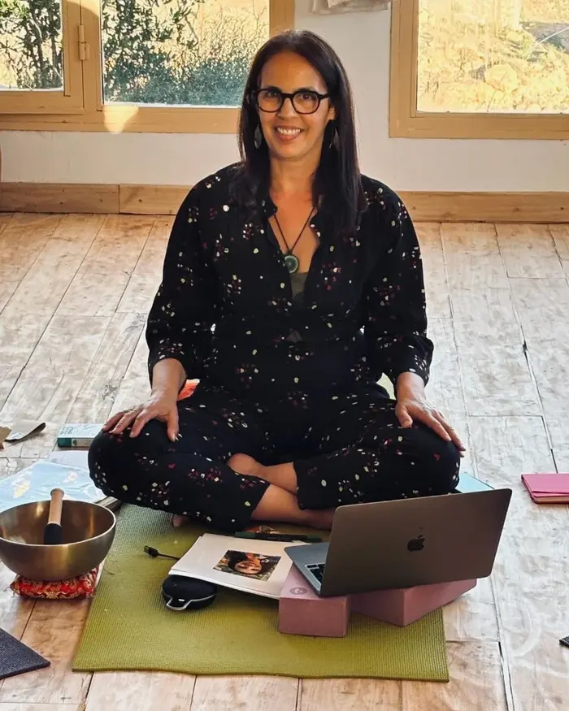

Yoga Restauratif & Bain Sonore · Bruxelles

Je vous propose, les jeudis à 18h45, une parenthèse pour ralentir, souffler et prendre soin de vous, de votre corps (dos, épaules, tensions…) quel que soit votre âge ou votre expérience.
Le Yoga Restauratif, inspiré de l’approche de Judith Hanson Lasater, invite le corps à se déposer pleinement dans des postures douces et soutenues, sans performance.
À travers cette pratique, la respiration et le Bain Sonore, je vous accompagne avec douceur, en personnalisant la séance selon là où vous en êtes, vos besoins et vos ressentis. Ici, simplement un espace pour ralentir, relâcher et se reconnecter à soi.
Les vibrations sonores viennent prolonger cette profonde détente du corps et du mental. Une bulle pour vous ressourcer, retrouver votre énergie et vous sentir pleinement vivant·e.
Professeure de yoga depuis 13 ans, diplômée en thérapies alternatives, Ayurveda et réflexologie. Mon approche est holistique, humaine et profondément à l’écoute de chacun.
Infos & Inscriptions :
Tél. / GSM : 0477 97 09 65
Email : soulyoga.brussels@gmail.com
SoulYoga & Ayurkitchen (Fadoua Amrani)
7, rue Vandenbussche – 1030 Bruxelles
Compte ING : BE09 3770 9325 7857
N° entreprise : 0689.560.132
Réseaux sociaux : Facebook / Instagram : SoulAyurYoga
Infos et réservations directement auprès de Fadoua au 0477 97 09 65 ou par email.